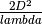
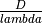

Method¶
The procedure for the near field calculation of aperture antennas used in this package is a refined version of the technique used in T.O. 31Z-10-4. The calculation procedure for an aperture was developed using the idea of first calculating the power density at a distance of  where is the largest dimension of the aperture. the near field power density for the aperture was then calculated by multiplying the far field power density by a correction factor. The correction factor for each aperture is a function of the aperture distribution, the ratio of  and the shape of the antenna as to whether it is circular or rectangular. The effect of the feed, struts, and other structural elements has not been taken into account.